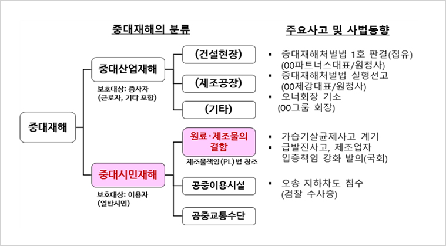

본문
제품사고와 중대재해처벌법
한국품질경영학회 산학부회장 이황주
중대재해처벌법이 규정하는 시민의 피해
지난 7월 중순 충북지역에 폭우가 쏟아지면서 오송역 인근의 지하차도가 침수되어 통행하던 차량에 탑승한 사람들이 미처 대피하지 못하고 많은 사람이 사망하는 불행한 사고가 있었다. 홍수로 인근지역의 제방이 범람하여 갑자기 엄청난 물이 지하차도로 밀려들어 발생한 일인데, 많은 인명피해가 발생하였다는 사실이 알려진 지 얼마 지나지 않아, 해당사고가 중대재해처벌 법에 해당되고, 관할 지자체를 포함하여 관련 행정기관 및 기업의 최고경영자가 법에 의하여 처벌받을 수 있으리라는 분석기사가 보도되었다. 바로 중대재해처벌법이 규정하고 있는 중대 시민재해 중 공중이용시설의 관리상의 결함으로 인하여 사망사고가 발생한 것이므로, 해당 시설을 실질적으로 운영 관리하는 기관의 경영책임자 등이 처벌받아야 한다는 것이다. 최근 사회적으로 중대한 사고가 발생할 경우, 이와 같이 중대재해처벌법 해당여부와 경영책임자, 즉 최고경영자의 처벌여부가 사회적 관심의 초점이 되고 있는데, 평소에 제대로 하지 않다가 사 고발생 후에서야 면피하기 위하여 허둥대는 모습을 보면 실망을 금할 수 없다. 그런데 여러분 들의 회사에서 제품으로 인해 중대한 인명사고가 발생한 경우에도 그와 같이 중대재해처벌법에 의하여 처벌받을 수 있다는 것을 기업의 최고경영자와 실무자들은 정확히 알고 있을까?
중대시민재해에는 제품사고도 포함
많은 사람이 중대재해처벌법이라고 하면 건설현장이나 제조공장 등에서 발생하는 산재사고 즉, 인명피해가 발생한 중대산업재해를 대상으로 제정된 법이라고 알고 있는데, 중대재해처벌 법은 중대산업재해 뿐만 아니라 일반 시민을 보호하기 위하여 중대시민재해를 포함하고 있으 며, 그에는 공중이용시설과 원료·제조물 즉, 여러분들 회사의 제품의 결함으로 인한 재해를 포 함하고 있다. 중대재해처벌법의 중대재해의 분류와 최근 사고발생 및 그에 대한 사법동향을 간략히 보면 표와 같다.
[표] 중대재해의 분류와 최근의 사법동향
경영자를 긴장케 하는 최근의 사법동향
법 시행 이후에도 사고가 줄어들지 않고 있는 중대산업재해 분야에서 이미 최고경영자에게 실형이 선고되고 법정구속되는 사례가 등장하고 있다. 특히 법인의 대표이사로 등재되지 않은 오너 회장을 실질적인 경영책임자로 보아 기소하는 등 강력한 법적용 사례까지 등장하고 있으므로, 기업의 최고경영자를 포함한 관련자들은 중대재해처벌법이 최고경영자와 기업에게 주는 영향을 잘 살펴야 한다. 특히 제품의 위험성이 높아 중대재해로 연결될 수 있는 인명사고 발 생의 우려가 많은 기업은 체계적인 예방활동을 위하여 각별한 점검과 보완이 필요하다. 중대재해처벌법의 제정 목적은 일부 기업을 자문하는 법률전문가들이 얘기하는 것처럼, 최고경영 자가 법적 처벌을 받지 않도록 하는 것이 아니라, 근원적으로 제품사고나 중대재해가 발생하지 않도록 하는 예방을 위한 활동 즉, 안전한 제품을 만들고자 하는 노력이 핵심이 되어야 한다. 회사가 잘못한 것이 명확한데 최고경영자만이 처벌을 면하고자 하는 것은 편법을 찾는 수준에 불과하기 때문이다.
제품사고를 근원적으로 예방하기 위한 경영자의 의무
기업의 경영자나 실무담당자를 보면 의외로 제품사고라고 부르는 제조물 결함에 의한 재해에 대해서는 잘 모르고 있는 것이 실상이다. 중대재해처벌법은 재해가 발생했다고 해서 무조건 최고경영자를 처벌하는 것이 아니라, 발생한 재해나 제품사고가 법 위반 등 잘못된 행위가 원 인이 되어(인과관계) 발생한 경우에, 재해를 예방하여야 할 의무가 있는 최고경영자 등 책임있는 자를 처벌하는 법이므로, 해당제품의 안전에 관하여 기존에 관계법령에서 규정하고 있는 의무의 철저한 이행관리를 포함하여, 중대재해처벌법에서 추가적으로 요구하는 의무사항 즉, 사고 발생을 예방하기 위한 전문인력 및 관리체계(경영시스템) 등을 체계적으로 운영하고, 점 검, 개선하는 등의 조직적인 활동이 필요하다. 중대재해처벌법이 경영책임자에게 요구하는 의 무를 그림으로 보면 다음과 같다.
[그림] 중대시민재해 제조물 결함분야 경영책임자의 의무
(환경부 해설자료에 필자가 중요사항 추가 표시)
법이 요구하는 제조물의 결함은 무엇이며, 중대재해처벌법은 기존의 제조물책임법과 달리 설계·제조·표시상의 결함으로 구분하는 것이 아니라 설계·제조·관리상의 결함으로 구분하는데 무엇이 다른지 파악하고 있는가? 이러한 핵심적인 내용을 이해하지 못한다면 회사의 대책이 적절하게 수립되고 운영되기 어려울 것이다
관리체계의 구축과 실행이 핵심과제
기업의 최고경영자가 중대재해처벌법에 의하여 형사처벌을 받는 것은 두말 할 나위 없이 최고경영자 자신에게뿐만 아니라, 해당기업에게도 중대한 경영리스크를 가져오는 치명적인 결과를 초래한다, 전기제품에서 발생하는 감전이나 화재로 인한 인명사고, 어린이용품에서 빈발하는 질식사고 등 인명피해의 위험성이 높은 기업은 리스크를 사전에 예방하기 위한 체계적이고 조직적인 활동이 필수다. 중대재해처벌법에서는 이에 대해 관리체계(경영시스템)을 구축하고이를 조직적이며 체계적으로 운영할 것을 최고경영자의 의무로 명시하고 이를 철저히 이행할것을 요구하고 있다. 기업에서 일반적으로 운영되는 관리체계(경영시스템)나 그에 관한 인증제도에서 이러한 제조물의 결함으로 인해 소비자에게 피해를 주는 사고나 재해를 다루는 예는식품에 적용되는 ISO 22000, 자동차에 적용되는 ISO/TS 16949(자동차부품 등의 공급사에적용되는 표준으로 현재는 IATF 16949으로 운영됨) 등이 대표적이다. 이와 같이 국제적으로 인정된 제품안전 관리체계(경영시스템)이 규정되어 있을 경우에는 이를 적용하면 무리가 없으나, 전기제품이나 생활용품, 어린이제품 등은 국제표준에서 별도의 경영시스템이 규정되어있지 않고, 국내법에서도 산업재해분야의 산업안전보건법과 같이 기업내부의 관리체계를 명시한 법규가 존재하지 않는다. 이러한 상황에 적용하기 위하여 ISO는 ISO 9001을 활용한 품질경영활동에 제품안전에 대한 지침인 ISO 10377 등을 통합하여 운영하는 방안을 권유하고 있는데,이를 활용하여 자사 제품의 위험수준 등 자사의 특성에 맞는 관리체계를 구축해야 할 것이다.자사가 생산 판매하는 제품 또는 동종의 타사 제품에서 인명사고가 발생한 사례가 있거나,앞으로 발생할 가능성이 있는 기업이라면 이러한 체계적인 제품사고 예방대책을 통하여 기업과 최고경영자에게 발생할 우려가 있는 리스크를 적극적으로 대비하는 활동이 반드시 있어야한다. 사고가 발생한 후에 법적 책임을 피하기 위해허둥대고 변명할 것이 아니라, 평소에 소비자 및 시민의 안전을 저해하는 위험의 존재여부에 대한 체계적인 분석과 대비책이 필요한 이유이다.
참고문헌
1. 환경부, 중대재해처벌법 중대시민재해(원료·제조물) 해설, 2022
2. ISO, ISO 10377:2013 Consumer product safety — Guidelines for suppliers
(https://www.iso.org)
3. 국가기술표준원, KS A ISO 10377:2018 소비자 제품 안전 - 공급자 지침
(https://standard.go.kr)
4. 이황주 외, 제품안전경영, 한국표준협회미디어, 2018